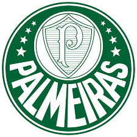

Times


Classificação
| Time | Jogos | Pontos |
|---|---|---|
| Palmeiras | 9 | 27 |
| São Paulo | 10 | 12 |
| Santos | 10 | 15 |
| Time | Jogos | Pontos |
|---|---|---|
| Palmeiras | 9 | 27 |
| São Paulo | 10 | 12 |
| Santos | 10 | 15 |
Times de Futebol é um site para informar e atualizar os fãs de Futebol sobre tudo que vem acontecendo nesse mundo dos esportes.